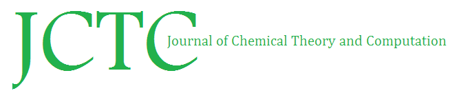
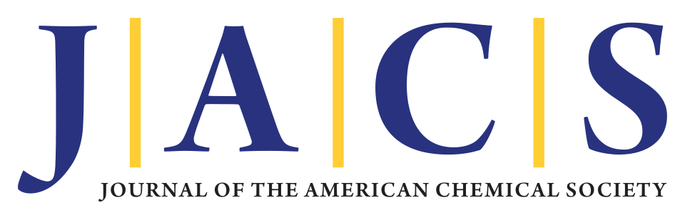

Publications/Preprints from graduate studies
- 10Molecular Mechanism of Mitochondrial Complex I Disruption by m. 14484T> C Underlying Leber Hereditary Optic Neuropathy bioRxiv
- 9A protein-based model of carbon monoxide dehydrogenase exhibits tunable covalency across cluster oxidation and ligand-bound states

- 8Designing an Artificial Metalloenzyme for Re-based CO2 Photoreduction ChemRxiv
- 7PyCPET─Computing Heterogeneous 3D Protein Electric Fields and Their Dynamics

- 6Distinct Electric Fields Enable Common Catalytic Function in Structurally Diverse Enzymes

- 5Methods for theoretical treatment of local fields in proteins and enzymes
- 4Directed Evolution of Protoglobin Optimizes the Enzyme Electric Field
- 3Coenzyme Q10 trapping in mitochondrial complex I underlies Leber’s hereditary optic neuropathy